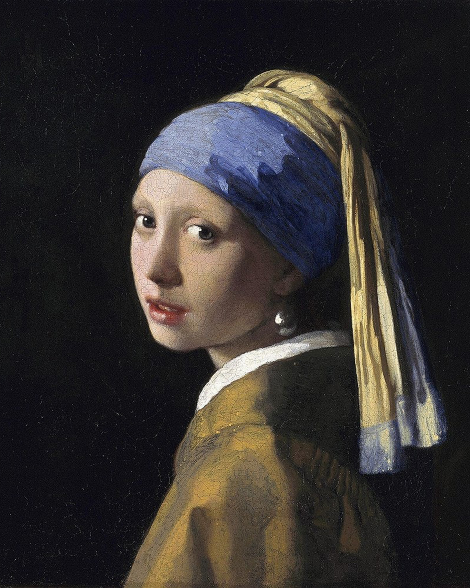
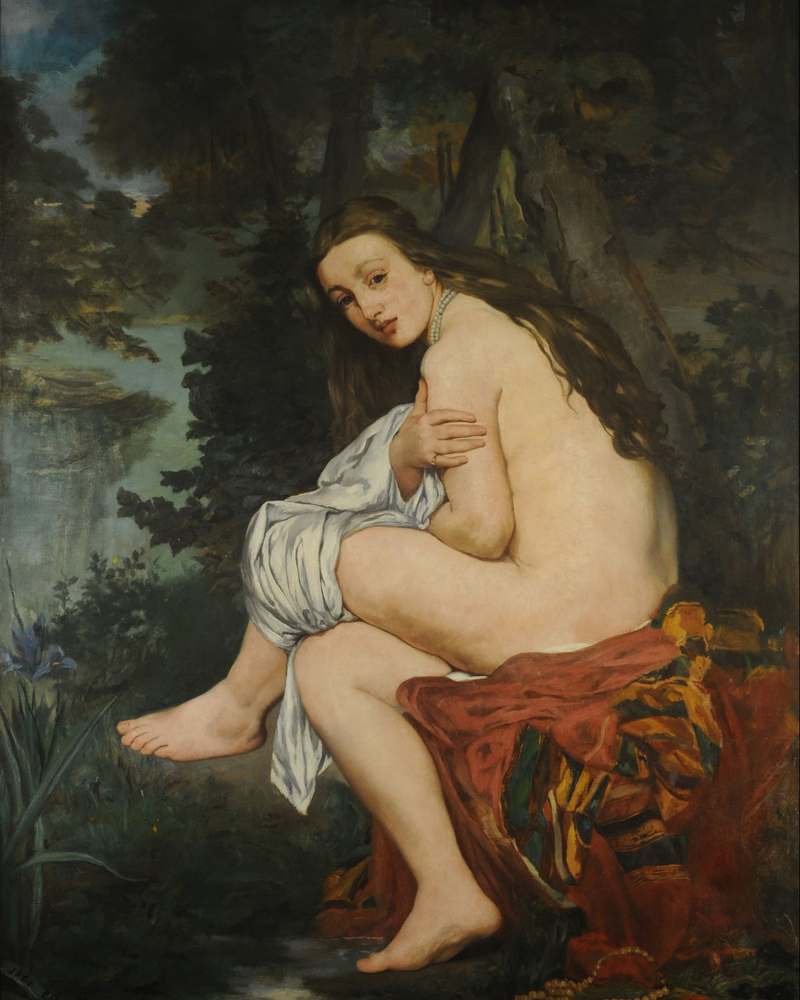
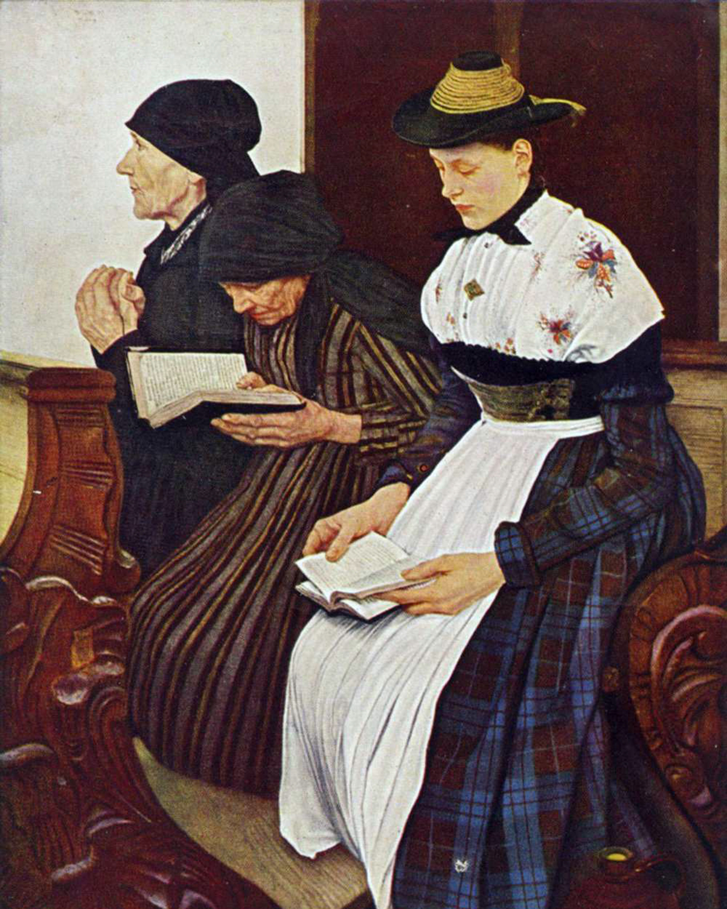
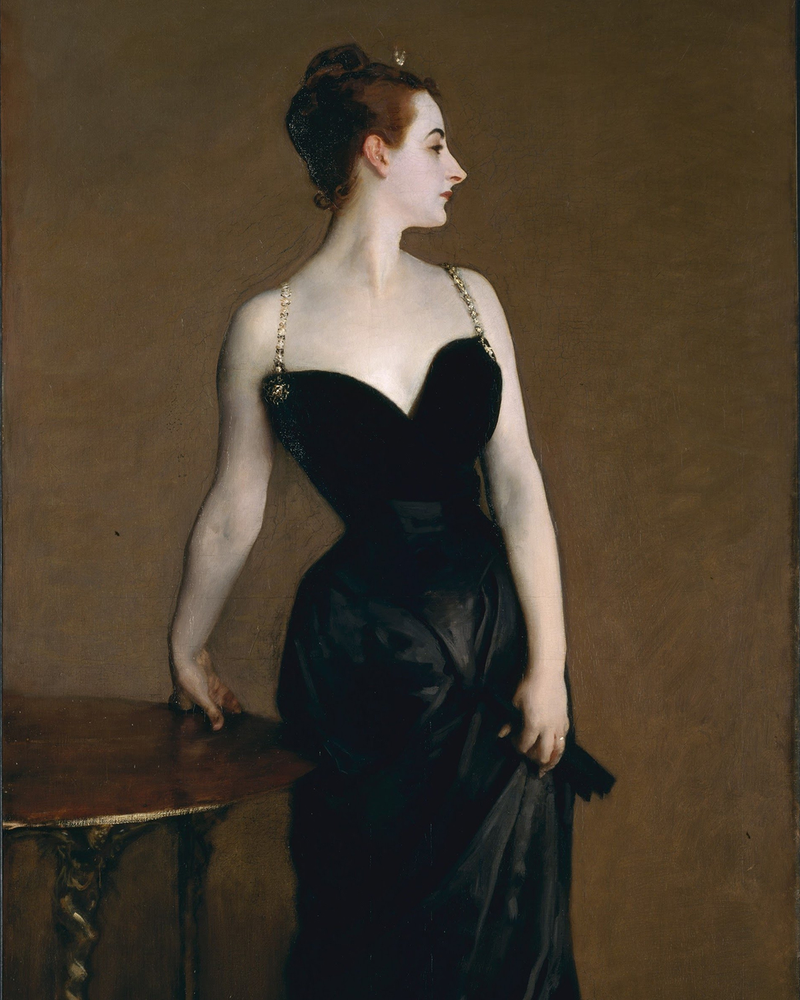
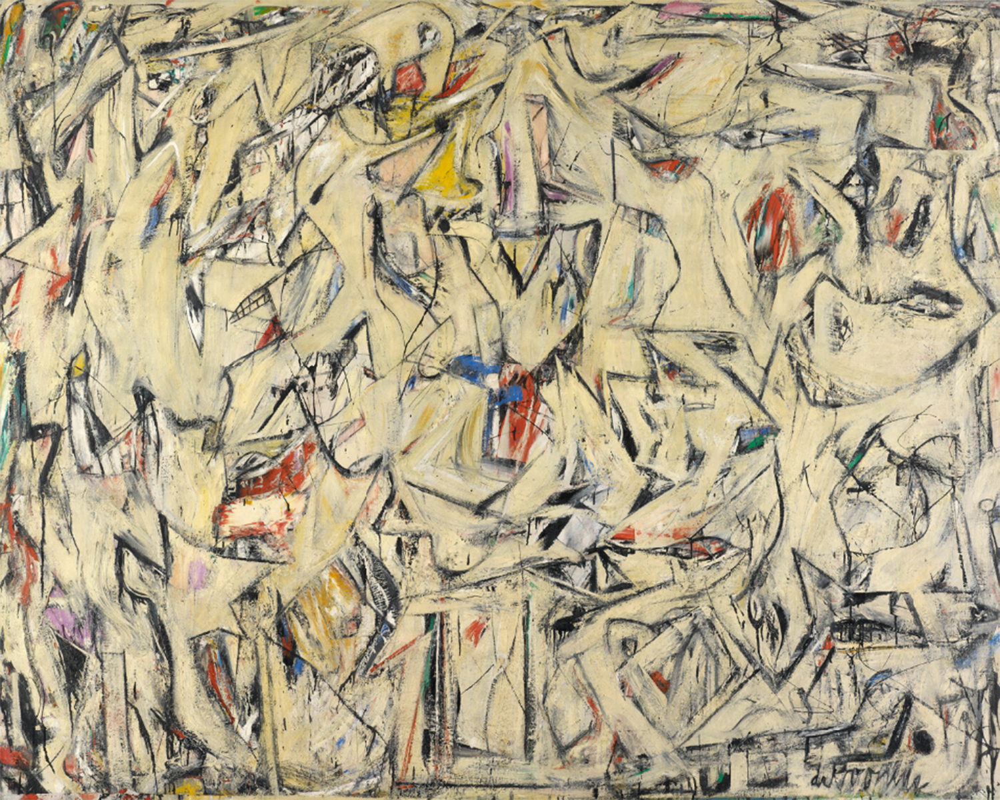
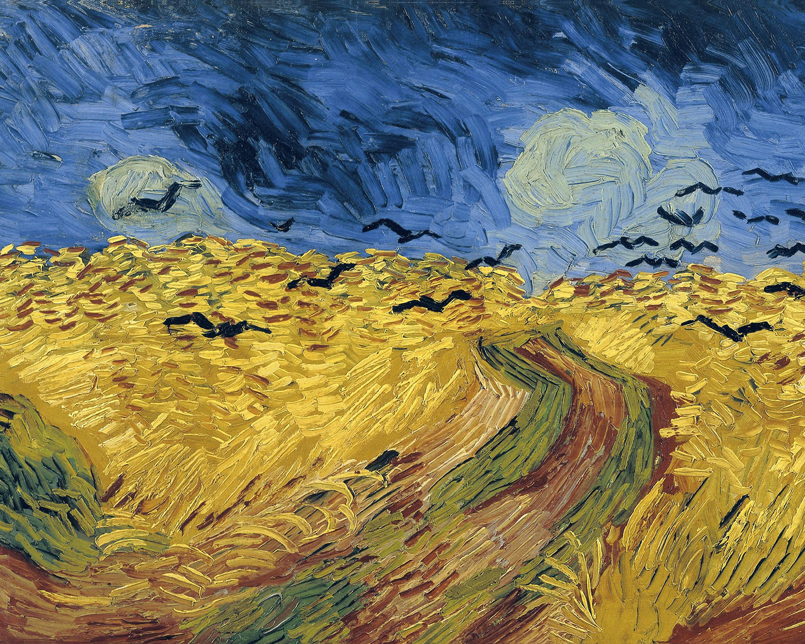

×
Home
Digital Arts
Traditional Arts
Films
☰
RÊVER


Johannes Vermeer,
"Girl with Pearl Earring"
(1965)
Leonardo Da Vinci,
"Mona Lisa"
(1503-1519)
Edouard Manet,
"The Surprised Nymph"
(1861)


Thomas Eakins,
"Gross Clinic"
(1875)
Wilhem Leibl,
"Three Women in Church"
(1881)
John Singer Sargent,
"Portrait of Madame X"
(1884)
Vincent van Gogh,
"Self-Portrait with Straw Hat"
(1888)
John Singer Sargent,
"Theodore Roosevelt"
(1903)
Grant Wood,
"American Gothic"
(1930)
Vincent van Gogh,
"The Starry Night"
(1889)
Franz Marc,
"Theodore Roosevelt"
(1912)
Piet Mondrian,
"The Gray Tree"
(1912)


Jackson Pollock,
"Number 32"
(1950)
Willem De Kooning,
"Excavation"
(1950)
Vincent van Gogh,
"Wheatfield with Crows"
(1890)